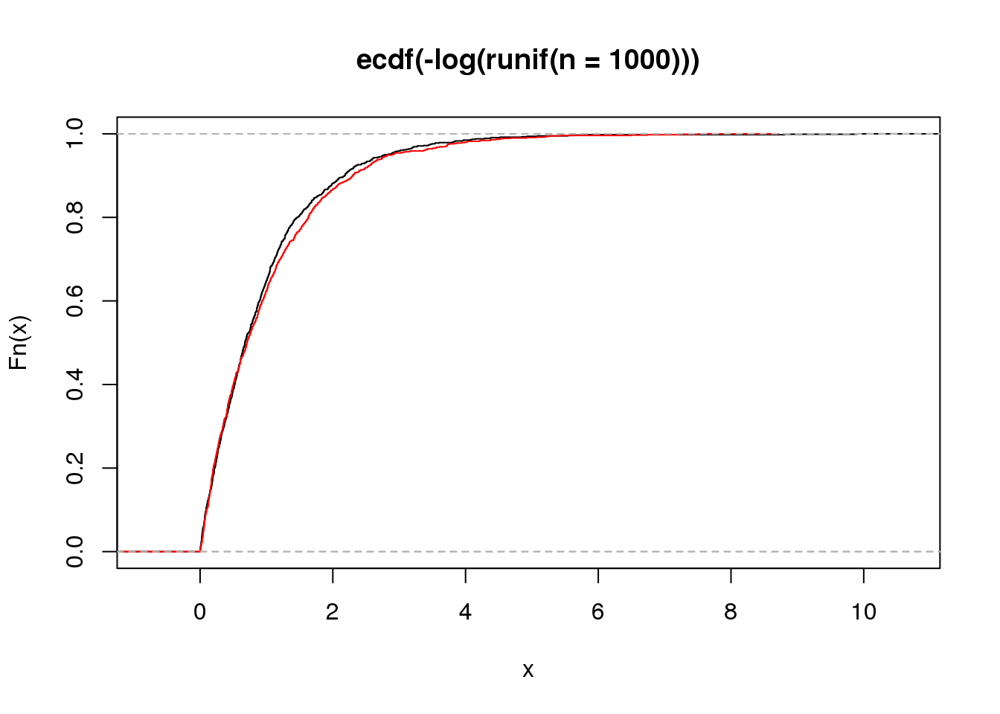

HW1
Philipp Ross
2017-01-10
Last updated: 2017-01-12
Code version: f1d1eaf
Problem 1
We want to find the probability that employee is lying, given that the lie detector detected. The calculation is outlined in the code block below and answer is printed underneath.
PDetectedLying <- 0.95
PDetectedNotLying <- 0.01
PNotDetectedLying <- 0.99
PNotDetectedNotLying <- 0.05
PLying <- 0.001
PNotLying <- 0.999
# Therefore...
PLyingDetected <- (PDetectedLying * PLying) / ((PDetectedLying * PLying) + (PDetectedNotLying*PNotLying))
print(PLyingDetected)[1] 0.08683729Problem 2
(a)
Here we want to show that if \(X = F^{-1}(U)\), then \(F(X) = U)\).
\[ \begin{align*} F(X) &= P(F^{-1} \leq x) \\ &= P(F(F^{-1}(U)) \leq F(x)) \\ &= P(U \leq F(x)) \\ &= F(x) \\ \end{align*} \]
(b)
Here we want to show that if \(Y = -log(U)\), then \(Y\) ~ \(Exp(1)\).
\[ \begin{align*} P(Y \leq y) &= P(-log(U) \leq y) \\ &= P(U \gt e^{-y}) \\ &= 1 - P(U \leq e^{-y}) \\ &= 1 - e^{-y} \\ \end{align*} \]
Which we can see is the CDF of the exponential distribution with mean 1.
(c)
mean(-log(runif(n=1000)))[1] 1.011809plot(ecdf(-log(runif(n=1000))))
plot(ecdf(rexp(n=1000)), add=T, col="red")
Problem 3
(a)
We know that, \(T_{2}\) ~ \(Exp(\lambda)\), \(\lambda = \frac{1}{2N}\), \(E[T_{2}] = 2N\), and \(\pi\)|\(T_{2}\) ~ \(Pois(\lambda)\) where \(\lambda = 2 \mu T_{2}\).
We also know that \(E[X] = E[E[X|Y]]\). By the law of total expectation we can then derive \(E[\pi]\).
\[ \begin{align*} E[\pi] &= E[E[\pi|T_{2}]] \\ &= E[2 \mu T_{2}] \\ &= 2 \mu E[T_{2}] \\ &= 2 \mu \cdot 2N \\ &= 4 \mu N \\ \end{align*} \]
(b)
\[ \begin{align*} Var[\pi] &= E[Var(\pi|T_{2})] + Var[E(\pi|T_{2})] \\ &= E(2 \mu T_{2}) + Var(2 \mu T_{2}) \\ &= 2 \mu E[T_{2}] + 4 \mu^{2}Var(T_{2}) \\ &= 4N \mu + (4N \mu)^{2} \\ \end{align*} \]
(c)
The relationship does not hold for the number of differences between two seuqnces sampled from a population. THe variance is greater than expected.
Problem 4
(a)
If \(X_{1}\) ~ \(Pois(\lambda_{1})\) and \(X_{2}\) ~ \(Pois(\lambda_{2})\), then what is \(X_{1} + X_{2}\)?
\[ \begin{align*} P(Y = n) &= P(X_{1} + X_{2} = n) \\ &= \sum_{k=0}^{n} P(X_{1} = k)P(X_{2} = n - k) \\ &= \sum_{k=0}^{n} \frac{\lambda_{1}^{k}e^{-\lambda_{1}}}{k!} \frac{\lambda_{2}^{n-k}e^{-\lambda_{2}}}{(n - k)!} \\ &= \frac{e^{(-\lambda_{1} - \lambda_{2})}}{n!} \sum_{k=0}^{n} \binom{n}{k}\lambda_{1}^{k}\lambda_{2}^{n-k} \\ &= \frac{(\lambda_{1} + \lambda_{2})^{n} e^{-(\lambda_{1} + \lambda_{2})}}{n!} \\ \end{align*} \]
Thus we can see that, \(X_{1} + X_{2}\) ~ \(Pois(\lambda_{1} + \lambda_{2})\)
(b)
What is \(P(X_{1} = k | X_{1} + X_{2} = n)\)?
Set \(Y = X_{1} + X_{2}\), then
\[ \begin{align*} P(X_{1} = k | Y = n) &= \frac{P((X_{1} = k) \bigcap (Y = n))}{P(Y = n)} \\ &= \frac{P(X_{1} = k) P(W = n - k)}{P(Y = n)} \\ &= \sum_{k=0}^{n} \binom{n}{k}\left(\frac{\lambda_{1}}{\lambda_{1} + \lambda_{2}}\right)^{k}\left(1 - \frac{\lambda_{1}}{\lambda_{1} - \lambda_{2}}\right)^{n - k} \end{align*} \]
Thus, \(X_{1}\) ~ \(Binom(n, \frac{\lambda_{1}}{\lambda_{1} + \lambda_{2}})\)
Problem 5
We are given,
\[ \widehat{\mu}_{m} = \frac{1}{m} \sum_{i=1}^{m} X_{i} \]
(a)
\[ Var[\widehat{\mu}_{m}] = E[(\widehat{\mu}_{m} - \mu^{2})] = \frac{\sigma^{2}}{m} \]
(b)
\[ Var[X] = \frac{1}{m} \sum_{i=1}^{m} X_{i}^{2} - \left(\sum_{i=1}^{m} X_{i}\right)^{2} = \widehat{\sigma}_{m}^{2} \]
(c)
\[ Var[\widehat{\mu}_{m}] = \frac{1}{m} \sum_{i = 1}^{m} \left(X_{i} - \widehat{\mu}_{m}\right)^{2} \]
(d)
Unbiased.
Problem 6
(a)

(b)
- Yes
- No
- Yes
(c)
\[ E[X_{2}] = E[E[X_{2}|X_{1},N_{1}]] = E[X_{1}] = np \]
(d)
simulation <- function(n, p, r, s) {
# generate matrices
X <- matrix(data=0,nrow=r,ncol=s)
N <- matrix(data=0,nrow=r,ncol=s)
# generate initial values
X[,1] <- rbinom(r, n, p)
N[,1] <- rpois(r, n)
# loop through number of nodes
for (i in 2:s) {
probs <- X[,i - 1] / N[,i - 1]
N[,i] <- rpois(r, X[,i - 1])
X[,i] <- rbinom(r, N[, i - 1], replace(probs, probs > 1, 1))
}
return(list(X=X,N=N))
}
# run simulation
results <- simulation(500,0.5,1000,4)(e)
mean(results$X[,2])[1] 249.848(f)
sum(results$X[,4] > results$X[,1])/1000[1] 0.167(g)
I would expect the proability to be lower for \(X_{4}\) than for \(X_{1}\) the majority of the time due to the large mean and variance for Poisson random variables that you are dividing binomail random variables by to generate an updated probaility of success for future binomial random variables. This says that the number of copies of an allele in a population that changes stochastically over time will tend to zero in this format.
Problem 7
We are given the simple chain graph \(X_{1} \rightarrow X_{2} \rightarrow X_{3} \rightarrow X_{4}\).
(a)
What is \(P(X_{1} = 0, X_{4} = 2)\)?
\[ \begin{align*} P(X_{1}, X_{4}) &= \sum_{X_{2}} \sum_{X_{3}} P(X_{1} \cdots X_{4}) \\ &= \sum_{X_{2}} \sum_{X_{3}} P(X_{1}) P(X_{2}|X_{1}) P(X_{3}|X_{2}) P(X_{4}|X_{3}) \\ &= P(X_{1}) \sum_{X_{2}} P(X_{2}|X_{1}) \sum_{X_{3}} P(X_{3}|X_{2}) P(X_{4}|X_{3}) \\ &= P(X_{1}) \sum_{X_{2}} P(X_{2}|X_{1}) m_{3}(X_{2}) \\ &= P(X_{1}) m_{2}(X_{1}) \\ \end{align*} \]
(b)
\[ P(X_{1} = 0, X_{4} = 2) = 0 \]
Session Information
sessionInfo()R version 3.3.1 (2016-06-21)
Platform: x86_64-pc-linux-gnu (64-bit)
Running under: Ubuntu 16.04.1 LTS
locale:
[1] LC_CTYPE=en_US.UTF-8 LC_NUMERIC=C
[3] LC_TIME=en_US.UTF-8 LC_COLLATE=en_US.UTF-8
[5] LC_MONETARY=en_US.UTF-8 LC_MESSAGES=en_US.UTF-8
[7] LC_PAPER=en_US.UTF-8 LC_NAME=C
[9] LC_ADDRESS=C LC_TELEPHONE=C
[11] LC_MEASUREMENT=en_US.UTF-8 LC_IDENTIFICATION=C
attached base packages:
[1] stats graphics grDevices utils datasets methods base
other attached packages:
[1] workflowr_0.2.0 rmarkdown_1.3
loaded via a namespace (and not attached):
[1] backports_1.0.4 magrittr_1.5 rprojroot_1.1 htmltools_0.3.5
[5] tools_3.3.1 yaml_2.1.14 Rcpp_0.12.6 stringi_1.1.1
[9] knitr_1.15.1 git2r_0.18.0 stringr_1.1.0 digest_0.6.11
[13] evaluate_0.10 This site was created with R Markdown